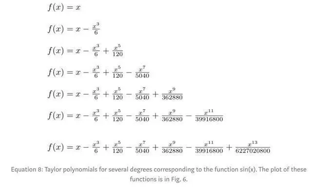

我的兴趣是数学。数学，这个看似抽象的学科，实际上蕴含着无穷的奥秘和魅力。从古至今，数学在人类历史和文明的发展中扮演了至关重要的角色。我对数学的热爱，源自于它的普遍性和逻辑性，以及它对现实世界深刻而深远的影响。 数学是一门需要严谨逻辑和深厚理解的学科。每当我解出一道难题，或是发现一个新的定理，我都能体验到那种无比的成就感和兴奋。这种喜悦，无法用言语来形容。此外，数学也是一种世界语言，它跨越国界，将不同的文化和思想紧密相连。学习数学，让我更好地理解了世界的多样性和复杂性。


我对数学的热爱，也源自于它在实际生活中的应用。无论是金融、工程、物理还是计算机科学，数学都扮演着关键的角色。通过数学，我们可以更好地理解这些领域的问题，甚至发明新的理论来解释和预测现象。这种应用，让我更加深刻地认识到数学的重要性和价值。 因此，我的兴趣是数学。我热爱它的普遍性、逻辑性和应用性。通过学习和探索数学，我不仅获得了知识和技能，更重要的是，我学会了如何思考问题，如何分析问题，如何找到解决方案。我相信，无论是在学术研究中，还是在未来的职业生涯中，数学都将继续是我的重要工具和路径。
版权所有©️plafle